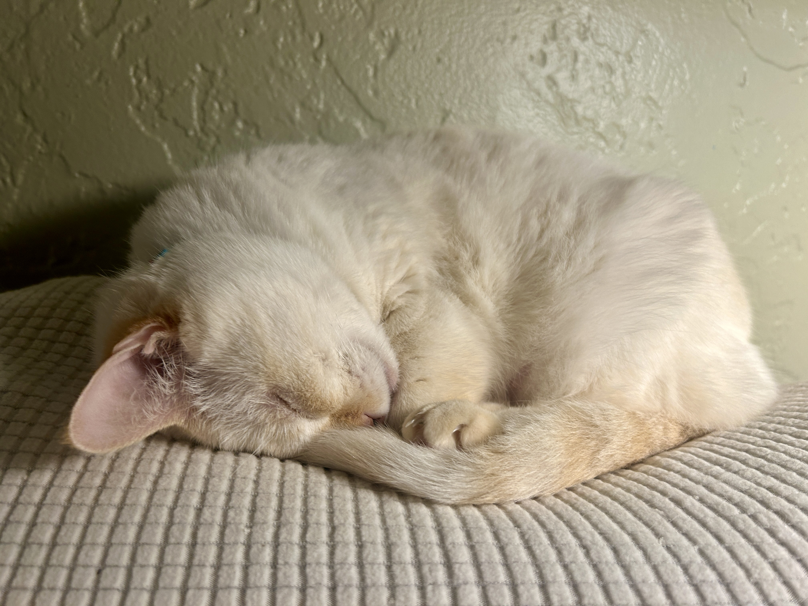
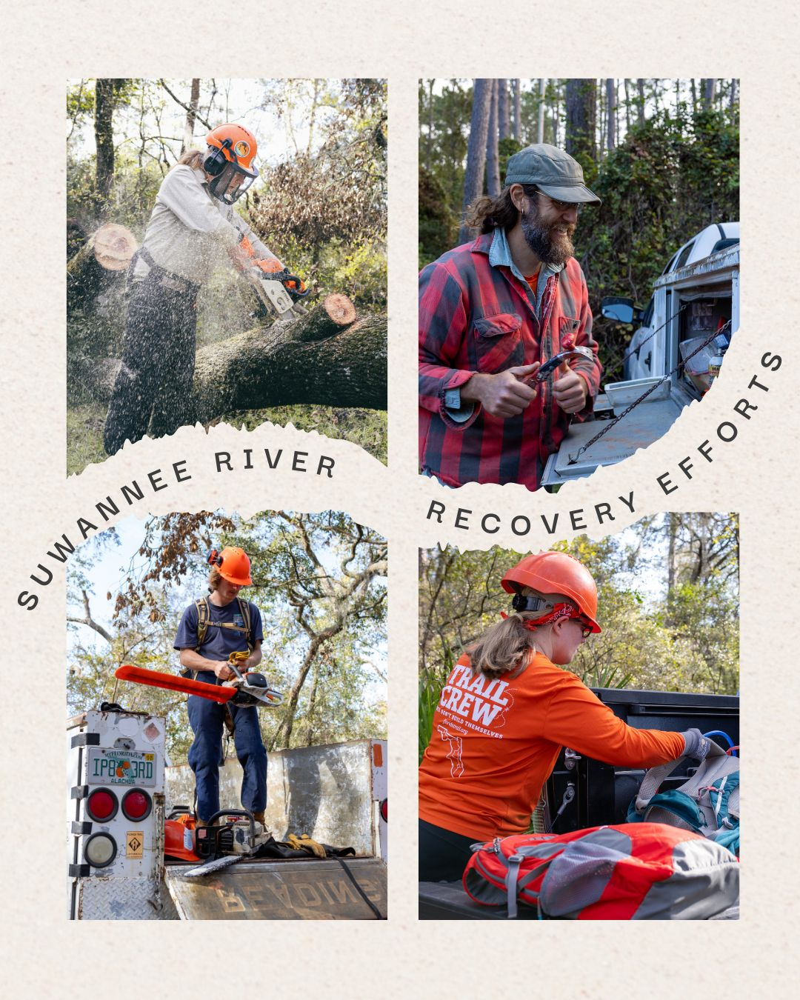

I'm a multimedia communication specialist with a background in graphic design and mass communication. With a passion for storytelling, I blend design, social media, and marketing to create engaging content that connects with audiences. When I'm not working, you'll find me exploring the outdoors and capturing scenic photography.

Related to my hobbies I volunteer doing trail maintance on the Florida National Scenic Trail in the fall and winter. I also have a 14 year old cat named Delilah.
 My most immediate career goal is to finish up my Master's degree. This is my last semester and I expect to graduate in May 2025. In the future I would like to have a career in a federal position related to the outdoors such as with the Forest Service.